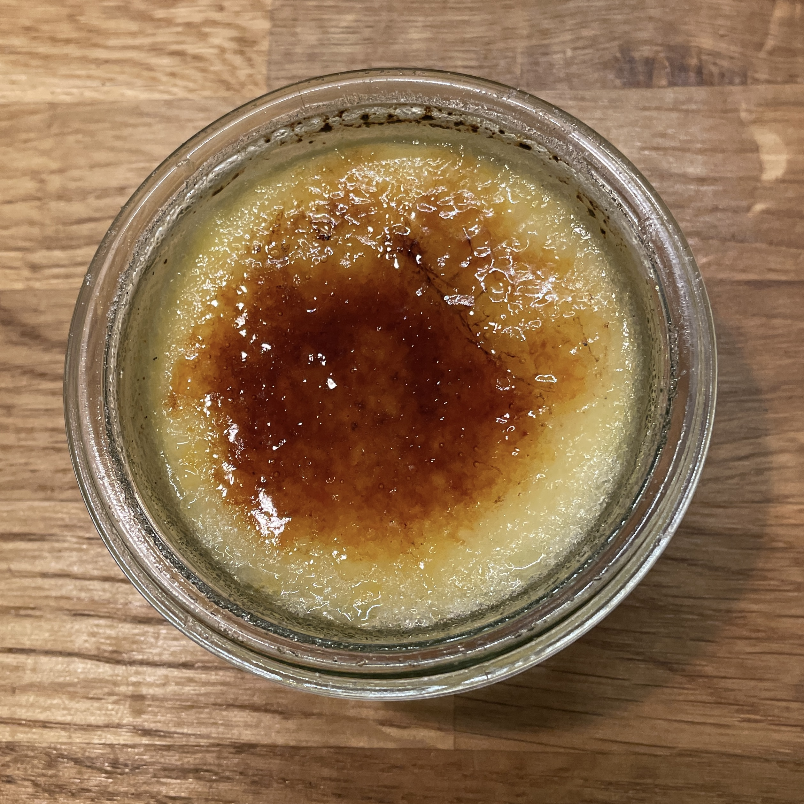

Crème Brûlée Sous Vide

üßæ Ingredienti¶
Crème
- 9 Tuorli
- 90 g Zucchero
- 3 g Sale
- 600 g Panna
Brûlée
- Zucchero
- Cannello da cucina a gas
üë©‚Äçüç≥ Preparazione¶
Riscaldare un contenitore capiente pieno d’acqua a 80° con il riscaldatore sous-vide.
Mescolare i tuorli con lo zucchero.
Aggiungere la panna liquida e mescolare senza incorporare aria.
Dividere in contenitori richiudibili in 5 o 6 porzioni da 150g circa (eg Weck Gourmet Jars 165 ml Jars RR80 with Glass Lid).
 Se si sono formare bolle in superficie, scoppiarle con il bruciatore.
Se si sono formare bolle in superficie, scoppiarle con il bruciatore.
Chiudere i barattoli senza stringere troppo.
Immergere nel bagno a 80° per un’ora.
Raffreddare in acqua fredda e conservare in frigo per massimo una settimana.
All’uso cospargere di zucchero e caramellarlo con il bruciatore.
üí° Consigli¶
Non dirigere il bruciatore verso il bordo del barattolo, il vetro potrebbe rompersi per il calore.